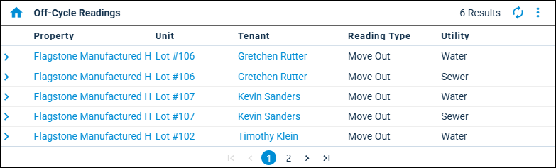

Source: https://rmxhelp.rentmanager.com/Topics/Express/Other/Dashboard-Tiles/Off-Cycle-Readings.htm
Off-Cycle Readings (Dashboard Tile)
The Off-Cycle Readings dashboard tile allows you to view a list of your pending off-cycle meter readings. Additionally, this tile displays the property, unit, tenant, reading type, and utility associated with the off-cycle reading, as well as the readings that are near or past their due dates.
The information on this dashboard tile is represented in a list.
Related Privileges
| Group | Privilege | Column |
|---|---|---|
| Setup | Edit own dashboards | Enabled |
For more information, refer to Control User Access.

Filter Information
Related Privileges
| Group | Privilege | Column |
|---|---|---|
| Setup | Edit dashboard data filters | Enabled |
For more information, refer to Control User Access.
To filter the information that displays in the dashboard tile, click  arrow_forward Settings to open the Off-Cycle Readings Data Filters pop-up. The available filter options are listed below.
arrow_forward Settings to open the Off-Cycle Readings Data Filters pop-up. The available filter options are listed below.
| Option | Description |
|---|---|
|
Ignore dashboard property filter |
If checked, override the property filter configured on the Dashboard. |
|
Property Filter |
Each property's pending off-cycle readings are included in the tile. To include all current and future properties, select <All Properties>. Alternatively, select a property Group from the drop-down list. More Information This field populates only with the properties to which you have access. Your access to properties can be managed from your user account or on the property's details page. For more information, refer to Limit Access to a Property. |
|
Utilities Filter |
Each utility (e.g., Water, Electric, Sewer) whose pending off-cycle readings are included in the tile. |
Column Descriptions
The information that displays on the tile is organized into the following columns.
| Column | Description |
|---|---|
|
Due Date |
The date the off-cycle meter reading is due, as entered on the Select Off-Cycle Reading Method pop-up. |
|
Property |
The property with which the pending off-cycle readings are associated. |
|
Reading Type |
The reading type (Move In, Move Out, Estimated Move In, or Estimated Move Out) with which the pending off-cycle readings are associated. |
|
Tenant |
The tenant with which the pending off-cycle readings are associated. |
|
Unit |
The unit with which the pending off-cycle readings are associated. |
|
Utility |
The name of the utility with which the pending off-cycle readings are associated. |